감정평가사-1차-2교시 (2020-06-13 기출문제)
1과목: 감정평가관계법규
1. 국토의 계획 및 이용에 관한 법령상 도시ㆍ군관리계획에 관한 설명으로 옳은 것은?
- 도시ㆍ군관리계획 결정의 효력은 지형도면을 고시한 날의 다음날부터 발생한다.
- 시ㆍ도지사는 국토교통부장관이 입안하여 결정한 도시ㆍ군관리계획을 변경하려면 미리 환경부장관과 협의하여야 한다.
- 도시ㆍ군관리계획을 입안할 수 있는 자가 입안을 제안받은 경우 그 처리 결과를 제안자에게 알려야 한다.
- 도시ㆍ군관리계획도서 및 계획설명서의 작성기준ㆍ작성방법 등은 조례로 정한다.
- 도지사가 도시ㆍ군관리계획을 직접 입안하는 경우 지형도면을 작성할 수 없다.
(정답률: 알수없음)

2. 국토의 계획 및 이용에 관한 법령상 도시ㆍ군기본계획에 관한 설명으로 옳지 않은 것은?
- 다른 법률에 따른 지역ㆍ지구 등의 지정으로 인하여 도시ㆍ군기본계획의 변경이 필요한 경우에는 토지적성평가를 하지 아니할 수 있다.
- 광역시장은 도시ㆍ군기본계획을 변경하려면 관계 행정기관의 장과 협의한 후 지방도시계획위원회의 심의를 거쳐야 한다.
- 시장 또는 군수는 도시ㆍ군기본계획을 변경하려면 도지사의 승인을 받아야 한다.
- 시장 또는 군수는 10년마다 관할 구역의 도시ㆍ군기본계획에 대하여 그 타당성 여부를 전반적으로 재검토하여 정비하여야 한다.
- 수도권정비계획법 에 의한 수도권에 속하지 아니하고 광역시와 경계를 같이하지 아니한 시로서 인구 10만명 이하인 시의 시장은 도시기본계획을 수립하지 아니할 수 있다.
(정답률: 알수없음)
3. 국토의 계획 및 이용에 관한 법령상 개발행위의 허가 등에 관한 설명으로 옳은 것은?
- 재난수습을 위한 응급조치인 경우에도 개발행위허가를 받고 하여야 한다.
- 시장 또는 군수가 개발행위허가에 경관에 관한 조치를 할 것을 조건으로 붙이는 경우 미리 개발행위허가를 신청한 자의 의견을 들어야 한다.
- 성장관리방안을 수립한 지역에서 하는 개발행위는 중앙도시계획위원회와 지방도시계획위원회의 심의를 거쳐야 한다.
- 지방자치단체는 자신이 시행하는 개발행위의 이행을 보증하기 위하여 이행보증금을 예치하여야 한다.
- 기반시설부담구역으로 지정된 지역은 중앙도시계획위원회의 심의를 거쳐 10년 이내의 기간 동안 개발행위허가를 제한할 수 있다.
(정답률: 알수없음)
4. 국토의 계획 및 이용에 관한 법령상 용도지역ㆍ용도지구ㆍ용도구역에 관한 설명으로 옳지 않은 것은?
- 녹지지역과 공업지역은 도시지역에 속한다.
- 용도지구 중 보호지구는 주거 및 교육 환경 보호나 청소년 보호 등의 목적으로 청소년 유해시설 등 특정시설의 입지를 제한할 필요가 있는 지구이다.
- 국토교통부장관은 국방부장관의 요청이 있어 보안상 도시의 개발을 제한할 필요가 있다고 인정되면 개발제한구역의 지정을 도시ㆍ군관리계획으로 결정할 수 있다.
- 해양수산부장관은 수산자원을 보호ㆍ육성하기 위하여 필요한 공유수면이나 그에 인접한 토지에 대한 수산자원보호구역의 지정을 도시ㆍ군관리계획으로 결정할 수 있다.
- 공유수면매립구역이 둘 이상의 용도지역에 걸쳐 있거나 이웃하고 있는 경우 그 매립구역이 속할 용도지역은 도시ㆍ군관리계획결정으로 지정하여야 한다.
(정답률: 알수없음)
5. 국토의 계획 및 이용에 관한 법령상 입지규제최소구역 지정에 관한 설명으로 옳은 것을 모두 고른 것은?
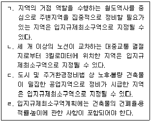
- ㄱ, ㄴ
- ㄱ, ㄷ
- ㄴ, ㄹ
- ㄱ, ㄷ, ㄹ
- ㄴ, ㄷ, ㄹ
(정답률: 알수없음)
6. 국토의 계획 및 이용에 관한 법령상 도시ㆍ군계획 등에 관한 설명으로 옳은 것은?
- 광역도시계획은 광역계획권의 장기발전방향을 제시하는 계획을 말한다.
- 도시ㆍ군기본계획의 내용이 광역도시계획의 내용과 다를 때에는 도시ㆍ군기본계획의 내용이 우선한다.
- 도시ㆍ군관리계획으로 결정하여야 할 사항은 국가계획에 포함될 수 없다.
- 시장 또는 군수가 관할 구역에 대하여 다른 법률에 따른 환경에 관한 부문별 계획을 수립할 때에는 도시ㆍ군관리계획의 내용에 부합되게 하여야 한다.
- 이해관계자가 도시ㆍ군관리계획의 입안을 제안한 경우, 그 입안 및 결정에 필요한 비용의 전부를 이해관계자가 부담하여야 한다.
(정답률: 알수없음)
7. 국토의 계획 및 이용에 관한 법령상 '법률 등의 위반자에 대한 처분'을 함에 있어서 청문을 실시해야 하는 경우로 명시된 것을 모두 고른 것은?
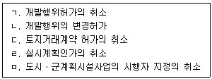
- ㄱ, ㄴ
- ㄴ, ㄷ
- ㄱ, ㄹ, ㅁ
- ㄷ, ㄹ, ㅁ
- ㄱ, ㄴ, ㄷ, ㄹ
(정답률: 알수없음)
8. 국토의 계획 및 이용에 관한 법령상 개발밀도관리구역에 관한 설명으로 옳지 않은 것은?
- 개발밀도관리구역의 지정권자는 특별시장ㆍ광역시장ㆍ특별자치시장ㆍ특별자치도지사ㆍ시장 또는 군수이다.
- 개발밀도관리구역은 기반시설의 설치가 용이한 지역을 대상으로 건폐율ㆍ용적률을 강화하여 적용하기 위해 지정한다.
- 개발밀도관리구역에서는 해당 용도지역에 적용되는 용적률 최대한도의 50퍼센트 범위에서 용적률을 강화하여 적용한다.
- 지정권자가 개발밀도관리구역을 지정하려면 해당 지방자치단체에 설치된 지방도시계획위원회의 심의를 거쳐야 한다.
- 지정권자는 개발밀도관리구역을 지정ㆍ변경한 경우에는 그 사실을 당해 지방자치단체의 공보에 게재하는 방법으로 고시하여야 한다.
(정답률: 알수없음)
9. 국토의 계획 및 이용에 관한 법령상 광역도시계획에 관한 설명으로 옳은 것은?
- 광역도시계획에는 경관계획에 관한 사항 중 광역계획권의 지정목적을 이루는 데 필요한 사항에 대한 정책 방향이 포함되어야 한다.
- 도지사가 광역계획권을 지정하려면 관계 중앙행정기관의 장의 의견을 들은 후 지방의회의 동의를 얻어야 한다.
- 광역도시계획을 공동으로 수립하는 시ㆍ도지사는 그 내용에 관하여 서로 협의가 되지 아니하는 경우 공동으로 국토교통부장관에게 조정을 신청하여야 한다.
- 광역계획권이 둘 이상의 시ㆍ도의 관할 구역에 걸쳐 있는 경우에는 국토교통부장관이 당해 광역도시계획의 수립권자가 된다.
- 도지사는 시장 또는 군수가 요청하는 경우에는 단독으로 광역도시계획을 수립할 수 있으며, 이 경우 국토교통부장관의 승인을 받아야 한다.
(정답률: 알수없음)
10. 국토의 계획 및 이용에 관한 법령상 개발행위 규모의 제한을 받는 경우 용도지역과 그 용도지역에서 허용되는 토지형질변경면적을 옳게 연결한 것은?
- 상업지역 - 3만제곱미터 미만
- 공업지역 - 3만제곱미터 미만
- 보전녹지지역 - 1만제곱미터 미만
- 관리지역 - 5만제곱미터 미만
- 자연환경보전지역 - 1만제곱미터 미만
(정답률: 알수없음)
11. 국토의 계획 및 이용에 관한 법령상 기반시설 중 유통ㆍ공급시설에 해당하는 것은?
- 재활용시설
- 방수설비
- 공동구
- 주차장
- 도축장
(정답률: 알수없음)
12. 국토의 계획 및 이용에 관한 법령상 용도지역별 용적률의 범위로 옳지 않은 것은?(단, 조례 및 기타 강화ㆍ완화조건은 고려하지 않음)
- 제2종일반주거지역: 100퍼센트 이상 250퍼센트 이하
- 유통상업지역: 200퍼센트 이상 1천100퍼센트 이하
- 생산녹지지역: 50퍼센트 이상 100퍼센트 이하
- 준공업지역: 150퍼센트 이상 500퍼센트 이하
- 농림지역: 50퍼센트 이상 80퍼센트 이하
(정답률: 알수없음)
13. 국토의 계획 및 이용에 관한 법령상 도시계획위원회에 관한 설명으로 옳은 것은?
- 시ㆍ도도시계획위원회는 위원장 및 부위원장 각 1명을 포함한 20명 이상 25명 이하의 위원으로 구성한다.
- 시ㆍ도도시계획위원회의 위원장과 부위원장은 위원 중에서 해당 시ㆍ도지사가 임명 또는 위촉한다.
- 중앙도시계획위원회의 회의는 재적위원 과반수의 출석으로 개의하고, 출석위원 과반수의 찬성으로 의결한다.
- 시ㆍ군ㆍ구도시계획위원회에는 분과위원회를 둘 수 없다.
- 중앙도시계획위원회 회의록은 심의 종결 후 3개월 이내에 공개 요청이 있는 경우 원본을 제공하여야 한다.
(정답률: 알수없음)
14. 감정평가 및 감정평가사에 관한 법령상 감정평가에 관한 설명으로 옳지 않은 것은?
- 감정평가업자가 토지를 감정평가하는 경우 적정한 실거래가가 있는 경우에는 이를 기준으로 할 수 있다.
- 감정평가업자는 해산 또는 폐업하는 경우에도 감정평가서 관련 서류를 발급일부터 5년 이상 보존하여야 한다.
- 국토교통부장관은 감정평가 타당성조사를 할 경우 해당 감정평가를 의뢰한 자에게 의견진술기회를 주어야 한다.
- 감정평가법인은 감정평가서를 의뢰인에게 발급하기 전에 같은 법인 소속의 다른 감정평가사에게 감정평가서의 적정성을 심사하게 하여야 한다.
- 토지 및 건물의 가격에 관한 정보 및 자료는 감정평가 정보체계의 관리대상에 해당한다.
(정답률: 알수없음)
15. 감정평가 및 감정평가사에 관한 법령상 감정평가사의 권리와 의무 등에 관한 설명으로 옳지 않은 것은?
- 감정평가사합동사무소에 두는 감정평가사의 수는 2명 이상으로 한다.
- 감정평가사사무소의 폐업신고와 관련하여 국토교통부장관은 폐업신고의 접수업무를 한국감정평가사협회에 위탁한다.
- 감정평가업자는 소속 감정평가사의 고용관계가 종료된 때에는 한국감정원에 신고하여야 한다.
- 감정평가업자는 고의 또는 중대한 과실로 잘못된 평가를 하여서는 아니 된다.
- 감정평가업자가 감정평가를 하면서 고의 또는 과실로 감정평가 당시의 적정가격과 현저한 차이가 있게 감정평가를 함으로써 선의의 제3자에게 손해를 발생하게 하였을 때에는 그 손해를 배상할 책임이 있다.
(정답률: 알수없음)
16. 감정평가 및 감정평가사에 관한 법령상 감정평가사의 징계사유에 해당하지 않는 것은?
- 등록을 한 감정평가사가 감정평가사사무소의 개설신고를 하지 아니하고 감정평가업을 한 경우
- 수수료의 요율 및 실비에 관한 기준을 지키지 아니한 경우
- 토지등의 매매업을 직접 한 경우
- 친족 소유 토지등에 대해서 감정평가한 경우
- 직무와 관련하여 과실범으로 금고 이상의 형을 선고받아 그 형이 확정된 경우
(정답률: 알수없음)
17. 부동산 가격공시에 관한 법령상 비주거용 부동산가격의 공시에 관한 설명으로 옳지 않은 것은?
- 국토교통부장관이 비주거용 표준부동산을 선정할 경우 미리 해당 비주거용 표준부동산이 소재하는 시ㆍ도지사의 의견을 들어야 하나, 이를 시장ㆍ군수ㆍ구청장의 의견으로 대신할 수 있다.
- 국토교통부장관은 중앙부동산가격공시위원회의 심의를 거쳐 비주거용 표준부동산가격을 공시할 수 있다.
- 비주거용 표준부동산가격의 공시에는 비주거용 표준부동산의 대지면적 및 형상이 포함되어야 한다.
- 국토교통부장관은 비주거용 개별부동산가격의 산정을 위하여 필요하다고 인정하는 경우에는 비주거용 부동산가격비준표를 작성하여 시장ㆍ군수 또는 구청장에게 제공하여야 한다.
- 공시기준일이 따로 정해지지 않은 경우, 비주거용 집합부동산가격의 공시기준일은 1월 1일로 한다.
(정답률: 알수없음)
18. 부동산 가격공시에 관한 법령상 주택가격의 공시에 관한 설명으로 옳은 것은?
- 국토교통부장관은 표준주택을 선정할 때에는 일반적으로 유사하다고 인정되는 일단의 공동주택 중에서 해당 일단의 공동주택을 대표할 수 있는 주택을 선정하여야 한다.
- 국토교통부장관은 표준주택가격을 조사ㆍ산정하고자 할 때에는 한국감정원 또는 둘 이상의 감정평가업자에게 의뢰한다.
- 표준주택가격은 국가ㆍ지방자치단체 등이 과세업무와 관련하여 주택의 가격을 산정하는 경우에 그 기준으로 활용하여야 한다.
- 표준주택가격의 공시사항에는 지목, 도로 상황이 포함되어야 한다.
- 개별주택가격 결정ㆍ공시에 소요되는 비용은 75퍼센트 이내에서 지방자치단체가 보조할 수 있다.
(정답률: 알수없음)
19. 부동산 가격공시에 관한 법령상 개별공시지가의 검증을 의뢰받은 감정평가업자가 검토ㆍ확인하여야 하는 사항에 해당하지 않는 것은?
- 비교표준지 선정의 적정성에 관한 사항
- 산정한 개별토지가격과 표준지공시지가의 균형 유지에 관한 사항
- 산정한 개별토지가격과 인근토지의 지가 및 전년도 지가와의 균형 유지에 관한 사항
- 토지가격비준표 작성의 적정성에 관한 사항
- 개별토지가격 산정의 적정성에 관한 사항
(정답률: 알수없음)
20. 국유재산법령상 행정재산에 관한 설명으로 옳지 않은 것은?
- 행정재산은 사유재산과 교환할 수 없다.
- 행정재산을 경쟁입찰의 방법으로 사용허가하는 경우 1개 이상의 유효한 입찰이 있으면 최고가격으로 응찰한 자를 낙찰자로 한다.
- 두 번에 걸쳐 유효한 입찰이 성립되지 아니한 행정재산의 경우 수의의 방법으로 사용허가를 받을 자를 결정할 수 있다.
- 중앙관서의 장이 행정재산의 사용허가를 철회하려는 경우에는 청문을 하여야 한다.
- 중앙관서의 장은 행정재산으로 사용하기로 결정한 날부터 5년이 지난 날까지 행정재산으로 사용되지 아니한 행정재산은 지체 없이 그 용도를 폐지하여야 한다.
(정답률: 알수없음)
21. 국유재산법령상 중앙관서의 장이 행정재산의 사용료를 면제할 수 있는 경우에 해당하지 않는 것은?
- 행정재산으로 할 목적으로 기부를 받은 재산에 대하여 기부자의 상속인에게 사용허가 하는 경우
- 건물 등을 신축하여 기부채납을 하려는 자가 신축기간에 그 부지를 사용하는 경우
- 행정재산을 직접 공공용으로 사용하려는 지방자치단체에 사용허가하는 경우
- 사용허가를 받은 행정재산을 천재지변으로 사용하지 못하게 되었을 때 그 사용하지 못한 기간에 대한 사용료의 경우
- 법령에 따라 정부가 자본금의 50퍼센트 이상을 출자하는 법인이 행정재산을 직접 비영리 공익사업용으로 사용하고자 하여 사용허가하는 경우
(정답률: 알수없음)
22. 국유재산법령상 일반재산에 관한 설명으로 옳은 것은?
- 총괄청은 일반재산의 관리ㆍ처분에 관한 사무의 일부를 위탁받을 수 없다.
- 증권을 제외한 일반재산을 지방자치단체에 처분할 때 처분재산의 예정가격은 두 개의 감정평가업자의 평가액을 산술평균한 금액으로 결정한다.
- 조림을 목적으로 하는 토지의 대부기간은 25년 이상으로 한다.
- 중앙관서의 장은 일반재산을 교환하려면 그 내용을 감사원에 보고하여야 한다.
- 일반재산을 매각하면서 매각대금을 한꺼번에 납부하기로 한 경우 매각대금의 완납 이전에도 해당 매각재산의 소유권 이전이 가능하다.
(정답률: 알수없음)
23. 국유재산법령상 국유재산에 관한 설명으로 옳은 것은?
- 행정재산은 민법 에 따른 시효취득의 대상이 된다.
- 판결에 따라 취득하는 경우에도 사권(私權)이 소멸되지 않은 재산은 국유재산으로 취득하지 못한다.
- 총괄청은 일반재산을 보존용재산으로 전환하여 관리할 수 있다.
- 직접 공공용으로 사용하기 위하여 국유재산을 관리전환하는 경우에는 유상으로 하여야 한다.
- 중앙관서의 장이 국유재산으로 취득한 소유자 없는 부동산은 등기일부터 20년간은 처분할 수 없다.
(정답률: 알수없음)
24. 건축법령상 건축허가권자로부터 건축 관련 입지와 규모의 사전결정 통지를 받은 경우 허가를 받은 것으로 보는 것이 아닌 것은?
- 국토의 계획 및 이용에 관한 법률 에 따른 개발행위허가
- 산지관리법 에 따른 산지전용허가(보전산지가 아님)
- 농지법 에 따른 농지전용허가
- 하천법 에 따른 하천점용허가
- 도로법 에 따른 도로점용허가
(정답률: 알수없음)
25. 건축법령상 시설군과 그에 속하는 건축물의 용도를 옳게 연결한 것은?
- 자동차 관련 시설군 - 운수시설
- 산업 등 시설군 - 자원순환 관련 시설
- 전기통신시설군 - 공장
- 문화집회시설군 - 수련시설
- 교육 및 복지시설군 - 종교시설
(정답률: 알수없음)
26. 건축법령상 면적이 200제곱미터 이상인 대지에 건축을 하는 건축주는 용도지역 및 건축물의 규모에 따라 해당 지방자치단체의 조례로 정하는 기준에 따라 대지에 조경이나 그 밖에 필요한 조치를 하여야 한다. 다만, 건축법령은 예외적으로 조경 등의 조치를 필요로 하지 않는 건축물을 허용하고 있다. 이러한 예외에 해당하는 것을 모두 고른 것은? (단, 그 밖의 조례, 건축법 제73조에 따른 적용 특례, 건축협정은 고려하지 않음)
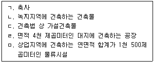
- ㄱ, ㄴ, ㄹ
- ㄱ, ㄴ, ㅁ
- ㄷ, ㄹ, ㅁ
- ㄱ, ㄴ, ㄷ, ㄹ
- ㄴ, ㄷ, ㄹ, ㅁ
(정답률: 알수없음)
27. 건축법령상 건축물의 구조 및 재료 등에 관한 설명으로 옳지 않은 것은?
- 건축물은 고정하중, 적재하중, 적설하중, 풍압, 지진, 그 밖의 진동 및 충격 등에 대하여 안전한 구조를 가져야 한다.
- 지방자치단체의 장은 구조 안전 확인 대상 건축물에 대하여 건축허가를 하는 경우 내진성능 확보 여부를 확인하여야 한다.
- 국토교통부장관은 지진으로부터 건축물의 구조 안전을 확보하기 위하여 건축물의 용도, 규모 및 설계구조의 중요도에 따라 내진등급을 설정하여야 한다.
- 연면적이 200제곱미터인 목구조 건축물을 건축하고자 하는 자는 사용승인을 받는 즉시 내진능력을 공개하여야 한다.
- 국가 또는 지방자치단체는 건축물의 소유자나 관리자에게 피난시설 등의 설치, 개량ㆍ보수 등 유지ㆍ관리에 대한 기술지원을 할 수 있다.
(정답률: 알수없음)
28. 공간정보의 구축 및 관리 등에 관한 법령상 지목의 구분과 그에 속하는 내용의 연결로 옳지 않은 것은?
- 도로 - 고속도로의 휴게소 부지
- 하천 - 자연의 유수가 있거나 있을 것으로 예상되는 토지
- 제방 - 방조제의 부지
- 대 - 묘지 관리를 위한 건축물의 부지
- 전 - 물을 상시적으로 직접 이용하여 미나리를 주로 재배하는 토지
(정답률: 알수없음)
29. 공간정보의 구축 및 관리 등에 관한 법령상 지적공부에 관한 내용으로 옳지 않은 것은?
- 지적소관청은 관할 시ㆍ도지사의 승인을 받은 경우 지적서고에 보존되어 있는 지적공부를 해당 청사 밖으로 반출할 수 있다.
- 지적공부를 정보처리시스템을 통하여 기록ㆍ저장한 경우 관할 시ㆍ도지사, 시장ㆍ군수 또는 구청장은 그 지적공부를 지적정보관리체계에 영구히 보존하여야 한다.
- 지적소관청은 부동산의 효율적 이용과 부동산과 관련된 정보의 종합적 관리ㆍ운영을 위하여 부동산종합공부를 관리ㆍ운영한다.
- 부동산종합공부를 열람하거나 부동산종합증명서를 발급받으려는 자는 지적소관청이나 읍ㆍ면ㆍ동의 장에게 신청할 수 있다.
- 지적전산자료를 신청하려는 자는 지적전산자료의 이용 또는 활용 목적 등에 관하여 미리 중앙지적위원회의 심사를 받아야 한다.
(정답률: 알수없음)
30. 공간정보의 구축 및 관리 등에 관한 법령상 지적도에 등록하여야 하는 사항이 아닌 것은?
- 토지의 소재
- 소유권 지분
- 도곽선(圖廓線)과 그 수치
- 삼각점 및 지적기준점의 위치
- 지목
(정답률: 알수없음)
31. 공간정보의 구축 및 관리 등에 관한 법령상 토지소유자가 하여야 하는 신청을 대신할 수 있는 자에 해당하지 않는 것은? (단, 등록사항 정정 대상 토지는 제외함)
- 국가가 취득하는 토지인 경우: 해당 토지를 관리하는 행정기관의 장
- 지방자치단체가 취득하는 토지인 경우: 해당 지방지적위원회
- 주택법 에 따른 공동주택의 부지인 경우: 집합건물의 소유 및 관리에 관한 법률 에 따른 관리인 또는 해당 사업의 시행자
- 민법 제404조에 따른 채권자
- 공공사업 등에 따라 지목이 학교용지로 되는 토지인 경우: 해당 사업의 시행자
(정답률: 알수없음)
32. 부동산등기법령상 임차권 설정등기의 등기사항 중 등기원인에 그 사항이 없더라도 반드시 기록하여야 하는 사항을 모두 고른 것은?
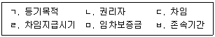
- ㄱ, ㄴ, ㄷ
- ㄱ, ㄷ, ㄹ
- ㄴ, ㄷ, ㅁ
- ㄱ, ㄹ, ㅁ, ㅂ
- ㄴ, ㄹ, ㅁ, ㅂ
(정답률: 알수없음)
33. 부동산등기법령상 '변경등기의 신청'에 관한 조문의 일부분이다. ( )에 들어갈 내용으로 각각 옳은 것은?
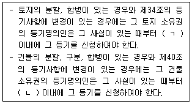
- ㄱ: 30일, ㄴ: 30일
- ㄱ: 3개월, ㄴ: 3개월
- ㄱ: 3개월, ㄴ: 1개월
- ㄱ: 1개월, ㄴ: 3개월
- ㄱ: 1개월, ㄴ: 1개월
(정답률: 알수없음)
34. 부동산등기법령상 등기신청에 관한 설명으로 옳지 않은 것은?
- 법인의 합병에 따른 등기는 등기권리자가 단독으로 신청한다.
- 신탁재산에 속하는 부동산의 신탁등기는 수탁자가 단독으로 신청한다.
- 수용으로 인한 소유권이전등기는 등기권리자가 단독으로 신청할 수 있다.
- 채권자는 민법 제404조에 따라 채무자를 대위하여 등기를 신청할 수 있다.
- 대표자가 있는 종중에 속하는 부동산의 등기는 대표자의 명의로 신청한다.
(정답률: 알수없음)
35. 부동산등기법령상 '권리에 관한 등기'에 관한 설명으로 옳은 것은?
- 권리자가 2인 이상인 경우에는 권리자별 지분을 기록하여야 하고 등기할 권리가 총유(總有)인 때에는 그 뜻을 기록하여야 한다.
- 등기원인에 권리의 소멸에 관한 약정이 있을 경우 신청인은 그 약정에 관한 등기를 신청할 수 있다.
- 등기관이 소유권 외의 권리에 대한 처분제한 등기를 할 때 등기상 이해관계 있는 제3자의 승낙이 없으면 부기로 할 수 없다.
- 등기관이 환매특약의 등기를 할 때 매매비용은 기록하지 아니한다.
- 등기관이 소유권보존등기를 할 때 등기원인과 그 연월일을 기록하여야 한다.
(정답률: 알수없음)
36. 동산ㆍ채권 등의 담보에 관한 법령상 동산담보권에 관한 설명으로 옳은 것은?
- 동산담보권의 효력은 설정행위에 다른 약정이 있더라도 담보목적물에 부합된 물건과 종물(從物)에 미친다.
- 동산담보권은 피담보채권과 분리하여 타인에게 양도할 수 있다.
- 담보권설정자가 담보목적물을 점유하는 경우에 경매절차는 압류에 의하여 개시한다.
- 채무자의 변제를 원인으로 동산담보권의 실행을 중지함으로써 담보권자에게 손해가 발생하더라도 채무자가 그 손해를 배상하여야 하는 것은 아니다.
- 담보권자는 자기의 채권을 변제받기 위하여 담보목적물의 경매를 청구할 수 없다.
(정답률: 알수없음)
37. 도시 및 주거환경정비법령상 정비기반시설이 아닌 것은?
- 경찰서
- 공용주차장
- 상수도
- 하천
- 지역난방시설
(정답률: 알수없음)
38. 도시 및 주거환경정비법령상 정비구역의 해제사유에 해당하는 것은?
- 조합의 재건축사업의 경우, 토지등소유자가 정비구역으로 지정ㆍ고시된 날부터 1년이 되는 날까지 조합설립추진위원회의 승인을 신청하지 않은 경우
- 조합의 재건축사업의 경우, 토지등소유자가 정비구역으로 지정ㆍ고시된 날부터 2년이 되는 날까지 조합설립인가를 신청하지 않은 경우
- 조합의 재건축사업의 경우, 조합설립추진위원회가 추진위원회 승인일부터 1년이 되는 날까지 조합설립인가를 신청하지 않은 경우
- 토지등소유자가 재개발사업을 시행하는 경우로서 토지등소유자가 정비구역으로 지정ㆍ고시된 날부터 5년이 되는 날까지 사업시행계획인가를 신청하지 않은 경우
- 조합설립추진위원회가 구성된 구역에서 토지등소유자의 100분의 20이 정비구역의 해제를 요청한 경우
(정답률: 알수없음)
39. 도시 및 주거환경정비법령상 조합설립추진위원회와 조합에 관한 설명으로 옳지 않은 것은?
- 조합설립추진위원회는 설계자의 선정 및 변경의 업무를 수행할 수 있다.
- 조합설립추진위원회는 추진위원회를 대표하는 추진위원장 1명과 감사를 두어야 한다.
- 조합장이 자기를 위하여 조합과 계약이나 소송을 할 때에는 이사가 조합을 대표한다.
- 정비사업전문관리업자의 선정 및 변경의 사항은 조합 총회의 의결을 거쳐야 한다.
- 조합장이 아닌 조합임원은 조합의 대의원이 될 수 없다.
(정답률: 알수없음)
40. 도시 및 주거환경정비법령상 조합이 정관의 기재사항을 변경하려고 할 때, 조합원 3분의 2 이상의 찬성을 받아야 하는 것을 모두 고른 것은? (단, 조례는 고려하지 않음)
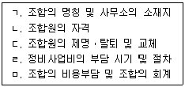
- ㄱ, ㄴ, ㄷ
- ㄱ, ㄹ, ㅁ
- ㄴ, ㄷ, ㄹ
- ㄱ, ㄴ, ㄷ, ㅁ
- ㄴ, ㄷ, ㄹ, ㅁ
(정답률: 알수없음)
2과목: 회계학
41. 재무보고를 위한 개념체계 중 재무정보의 질적특성에 관한 설명으로 옳지 않은 것은?
- 유용한 재무정보의 질적특성은 그 밖의 방법으로 제공되는 재무정보 뿐만 아니라 재무제표에서 제공되는 재무정보에도 적용된다.
- 중요성은 기업 특유 관점의 목적적합성을 의미하므로 회계기준위원회는 중요성에 대한 획일적인 계량 임계치를 정하거나 특정한 상황에서 무엇이 중요한 것인지를 미리 결정하여야 한다.
- 재무정보의 예측가치와 확인가치는 상호 연관되어 있다. 예측가치를 갖는 정보는 확인가치도 갖는 경우가 많다.
- 재무보고의 목적을 달성하기 위해 근본적 질적특성 간 절충('trade-off')이 필요할 수도 있다.
- 근본적 질적특성을 충족하면 어느 정도의 비교가능성은 달성될 수 있다.
(정답률: 알수없음)
42. 재무제표 표시에 관한 설명으로 옳은 것은?
- 비용을 성격별로 분류하는 경우에는 적어도 매출원가를 다른 비용과 분리하여 공시해야 한다.
- 기타포괄손익의 항목(재분류조정 포함)과 관련한 법인세비용 금액은 포괄손익계산서에 직접 표시해야 하며 주석을 통한 공시는 허용하지 않는다.
- 유동자산과 비유동자산을 구분하여 표시하는 경우라면 이연법인세자산을 유동자산으로 분류할 수 있다.
- 한국채택국제회계기준에서 별도로 허용하지 않는 한, 중요하지 않은 항목이라도 유사항목과 통합하여 표시해서는 안된다.
- 경영진은 재무제표를 작성할 때 계속기업으로서의 존속가능성을 평가해야 한다.
(정답률: 알수없음)
43. (주)감평은 20x1년 1월 1일 미국에 있는 건물(취득원가 $5,000, 내용연수 5년, 잔존가치 $0, 정액법 상각)을 취득하였다. (주)감평은 건물에 대하여 재평가모형을 적용하고 있으며, 20x1년 12월 31일 현재 동 건물의 공정가치는 $6,000로 장부금액과의 차이는 중요하다. (주)감평의 기능통화는 원화이며, 20x1년 1월 1일과 20x1년 12월 31일의 환율은 각각 ￦1,800/$과 ￦1,500/$이고, 20x1년의 평균환율은 ￦1,650/$이다. (주)감평이 20x1년 말 재무상태표에 인식해야 할 건물에 대한 재평가잉여금은?
- ￦1,500,000
- ￦1,650,000
- ￦1,800,000
- ￦3,000,000
- ￦3,300,000
(정답률: 알수없음)
44. (주)감평은 20x1년 4월 1일에 만기가 20x1년 7월 31일인 액면금액 ￦1,200,000의 어음을 거래처로부터 수취하였다. (주)감평은 동 어음을 20x1년 6월 30일 은행에서 할인하였으며, 할인율은 연 12%이다. 동 어음이 무이자부인 어음일 경우(A)와 연 9%의 이자부어음일 경우(B) 각각에 대해 어음할인시 (주)감평이 금융상품(받을어음)처분손실로 인식할 금액은? (단, 어음할인은 금융상품의 제거요건을 충족시킨다고 가정하며, 이자는 월할계산한다.)
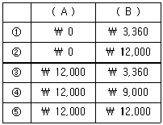
- ①
- ②
- ③
- ④
- ⑤
(정답률: 알수없음)
45. (주)감평은 20x1년 초 임대수익을 얻고자 건물(취득원가 ￦1,000,000, 내용연수 5년, 잔존가치 ￦100,000, 정액법 상각)을 취득하고, 이를 투자부동산으로 분류하였다. 한편, 부동산 경기의 불황으로 20x1년 말 동 건물의 공정가치는 ￦800,000으로 하락하였다. 동 건물에 대하여 공정가치모형을 적용할 경우에 비해 원가모형을 적용할 경우 (주)감평의 20x1년도 당기순이익은 얼마나 증가 혹은 감소하는가? (단, 동 건물은 투자부동산의 분류요건을 충족하며, (주)감평은 동 건물을 향후 5년 이내 매각할 생각이 없다.)
- ￦20,000 증가
- ￦20,000 감소
- ￦0
- ￦180,000 증가
- ￦180,000 감소
(정답률: 알수없음)
46. (주)감평은 20x1년 초 기계장치(취득원가 ￦1,600,000, 내용연수 4년, 잔존가치 ￦0, 정액법 상각)를 취득하였다. (주)감평은 기계장치에 대해 원가모형을 적용한다. 20x1년 말 동 기계장치에 손상징후가 존재하여 회수가능액을 결정하기 위해 다음과 같은 정보를 수집하였다.
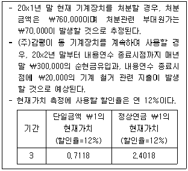
(주)감평이 20x1년 유형자산(기계장치) 손상차손으로 인식할 금액은? (단, 계산금액은 소수점 첫째자리에서 반올림하며, 단수차이로 인한 오차가 있으면 가장 근사치를 선택한다.)
- ￦465,194
- ￦470,000
- ￦479,460
- ￦493,696
- ￦510,000
(정답률: 알수없음)
47. (주)감평은 20x1년 초 환경설비(취득원가 ￦5,000,000, 내용연수 5년, 잔존가치 ￦0, 정액법 상각)를 취득하였다. 동 환경설비는 관계법령에 의하여 내용연수가 종료되면 원상 복구해야 하며, 이러한 복구의무는 충당부채의 인식요건을 충족한다. (주)감평은 취득시점에 내용연수 종료 후 복구원가로 지출될 금액을 ￦200,000으로 추정하였으며, 현재가치계산에 사용될 적절한 할인율은 연 10%로 내용연수 종료시점까지 변동이 없을 것으로 예상하였다. 하지만 (주)감평은 20x2년 초 환경설비의 내용연수 종료 후 복구원가로 지출될 금액이 ￦200,000에서 ￦300,000으로 증가할 것으로 예상하였으며, 현재가치계산에 사용될 할인율도 연10%에서 연 12%로 수정하였다. (주)감평이 환경설비와 관련된 비용을 자본화하지 않는다고 할 때, 동 환경설비와 관련하여 20x2년도 포괄손익계산서에 인식할 비용은? (단, (주)감평은 모든 유형자산에 대하여 원가모형을 적용하고 있으며, 계산금액은 소수점 첫째자리에서 반올림하고, 단수차이로 인한 오차가 있으면 가장 근사치를 선택한다.)
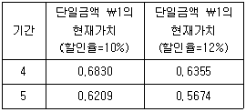
- ￦1,024,837
- ￦1,037,254
- ￦1,038,350
- ￦1,047,716
- ￦1,061,227
(정답률: 알수없음)
48. 토지의 취득원가에 포함해야 할 항목을 모두 고른 것은?
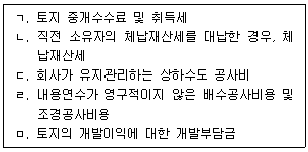
- ㄱ, ㄴ, ㄷ
- ㄱ, ㄴ, ㅁ
- ㄱ, ㄷ, ㄹ
- ㄱ, ㄷ, ㅁ
- ㄴ, ㄹ, ㅁ
(정답률: 알수없음)
49. 상품매매기업인 (주)감평은 계속기록법과 실지재고조사법을 병행하고 있다. (주)감평의 20x1년 기초재고는 ￦10,000(단가 ￦100)이고, 당기매입액은 ￦30,000(단가 ￦100), 20x1년 말 현재 장부상 재고수량은 70개이다. (주)감평이 보유하고 있는 재고자산은 진부화로 인해 단위당 순실현가능가치가 ￦80으로 하락하였다. (주)감평이 포괄손익계산서에 매출원가로 ￦36,000을 인식하였다면, (주)감평의 20x1년 말 현재 실제재고수량은? (단, 재고자산감모손실과 재고자산평가손실은 모두 매출원가에 포함한다.)
- 40개
- 50개
- 65개
- 70개
- 80개
(정답률: 알수없음)
50. (주)감평은 신약개발을 위해 20x1년 중에 연구활동관련 ￦500,000, 개발활동관련 ￦800,000을 지출하였다. 개발활동에 소요된 ￦800,000 중 ￦300,000은 20x1년 3월 1일부터 동년 9월 30일까지 지출되었으며 나머지 금액은 10월 1일 이후에 지출되었다. (주)감평의 개발활동이 무형자산 인식기준을 충족한 것은 20x1년 10월 1일부터이며, (주)감평은 20x2년 초부터 20x2년 말까지 ￦400,000을 추가 지출하고 신약개발을 완료하였다. 무형자산으로 인식한 개발비는 20x3년 1월 1일부터 사용이 가능하며, 내용연수 4년, 잔존가치 ￦0, 정액법으로 상각하고, 원가모형을 적용한다. (주)감평의 20x3년 개발비 상각액은?
- ￦225,000
- ￦250,000
- ￦300,000
- ￦325,000
- ￦350,000
(정답률: 알수없음)
51. (주)감평은 20x1년 초 상각후원가(AC)로 측정하는 금융부채에 해당하는 회사채(액면금액 ￦1,000,000, 액면이자율 연 10%, 만기 3년, 매년 말 이자지급)를 발행하였다. 회사채 발행시점의 시장이자율은 연 12%이나 유효이자율은 연 13%이다. (주)감평이 동 회사채 발행과 관련하여 직접적으로 부담한 거래원가는? (단, 계산 금액은 소수점 첫째자리에서 반올림하며, 단수차이로 인한 오차가 있으면 가장 근사치를 선택한다.)
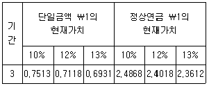
- ￦22,760
- ￦30,180
- ￦48,020
- ￦52,130
- ￦70,780
(정답률: 알수없음)
52. (주)감평은 확정급여제도를 채택하고 있으며, 20x1년 초 순확정급여부채는 ￦20,000이다. (주)감평의 20x1년도 확정급여제도와 관련된 자료는 다음과 같다.
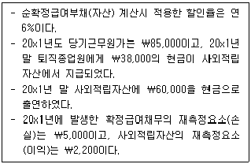
(주)감평이 20x1년 말 재무상태표에 순확정급여부채로 인식할 금액과 20x1년도 포괄손익계산서상 당기손익으로 인식할 퇴직급여 관련 비용은?
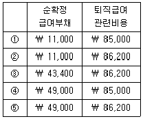
- ①
- ②
- ③
- ④
- ⑤
(정답률: 알수없음)
53. (주)감평은 20x1년 초 부여일로부터 3년의 용역제공을 조건으로 직원 50명에게 각각 주식선택권 10개를 부여하였으며, 부여일 현재 주식선택권의 단위당 공정가치는 ￦1,000으로 추정되었다. 주식선택권 1개로는 1주의 주식을 부여받을 수 있는 권리를 가득일로부터 3년간 행사가 가능하며, 총 35명의 종업원이 주식선택권을 가득하였다. 20x4년 초 주식선택권을 가득한 종업원 중 60%가 본인의 주식선택권 전량을 행사하였다면, (주)감평의 주식발행초과금은 얼마나 증가하는가? (단, (주)감평 주식의 주당 액면금액은 ￦5,000이고, 주식선택권의 개당 행사가격은 ￦7,000이다.)
- ￦630,000
- ￦1,⑤0,000
- ￦1,230,000
- ￦1,470,000
- ￦1,680,000
(정답률: 알수없음)
54. (주)감평은 20x1년 1월 1일 제품을 판매하기로 (주)한국과 계약을 체결하였다. 동제품에 대한 통제는 20x2년 말에 (주)한국으로 이전된다. 계약에 의하면 (주)한국은 ㉠계약을 체결할 때 ￦100,000을 지급하거나 ㉡제품을 통제하는 20x2년 말에 ￦125,440을 지급하는 방법 중 하나를 선택할 수 있다. 이 중 (주)한국은 ㉠을 선택함으로써 계약체결일에 현금 ￦100,000을 (주)감평에게 지급하였다. (주)감평은 자산 이전시점과 고객의 지급시점 사이의 기간을 고려하여 유의적인 금융요소가 포함되어 있다고 판단하고 있으며, (주)한국과 별도 금융거래를 한다면 사용하게 될 증분차입이자율 연 10%를 적절한 할인율로 판단한다. 동 거래와 관련하여 (주)감평이 20x1년 말 재무상태표에 계상할 계약부채의 장부금액(A)과 20x2년도 포괄손익계산서에 인식할 매출수익(B)은?
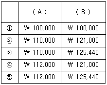
- ①
- ②
- ③
- ④
- ⑤
(정답률: 알수없음)
55. (주)감평의 20x1년 말 예상되는 자산과 부채는 각각 ￦100,000과 ￦80,000으로 부채비율(총부채 ÷ 주주지분) 400%가 예상된다. (주)감평은 부채비율을 낮추기 위해 다음 대안들을 검토하고 있다. 다음 설명 중 옳지 않은 것은? (단, (주)감평은 모든 유형자산에 대하여 재평가모형을 적용하고 있다.)
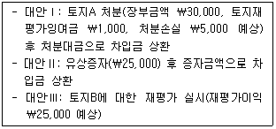
- 토지A 처분대금으로 차입금을 상환하더라도 부채비율은 오히려 증가한다.
- 토지A를 처분만 하고 차입금을 상환하지 않으면 부채비율은 오히려 증가한다.
- 유상증자 대금으로 차입금을 상환하면 부채비율은 감소한다.
- 유상증자만 하고 차입금을 상환하지 않더라도 부채비율은 감소한다.
- 토지B에 대한 재평가를 실시하면 부채비율은 감소한다.
(정답률: 알수없음)
56. (주)감평은 20x1년 초 액면가 ￦5,000인 보통주 200주를 주당 ￦15,000에 발행하여 설립되었다. 다음은 (주)감평의 20x1년 중 자본거래이다.
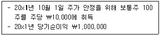
경영진은 20x2년 초 부채비율(총부채 ÷ 주주지분) 200%를 160%로 낮추기 위한 방안을 실행하였다. 20x2년 초 실행된 방안으로 옳은 것은?
- 자기주식 50주를 소각
- 자기주식 50주를 주당 ￦15,000에 처분
- 보통주 50주를 주당 ￦10,000에 유상증자
- 이익잉여금 ￦750,000을 재원으로 주식배당
- 주식발행초과금 ￦750,000을 재원으로 무상증자
(정답률: 알수없음)
57. (주)감평은 20x1년 초 지방자치단체로부터 무이자조건의 자금 ￦100,000을 차입 (20x4년 말 전액 일시상환)하여 기계장치(취득원가 ￦100,000, 내용연수 4년, 잔존가치 ￦0, 정액법 상각)를 취득하는데 전부 사용하였다. 20x1년 말 기계장치 장부금액은? (단, (주)감평이 20x1년 초 금전대차 거래에서 부담할 시장이자율은 연 8%이고, 정부보조금을 자산의 취득원가에서 차감하는 원가(자산)차감법을 사용한다.)
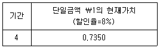
- ￦48,500
- ￦54,380
- ￦55,125
- ￦75,000
- ￦81,625
(정답률: 알수없음)
58. (주)감평은 20x1년 초 기계장치(취득원가 ￦1,000,000, 내용연수 5년, 잔존가치 ￦0, 정액법 상각)를 취득하여 원가모형을 적용하고 있다. 20x2년 초 (주)감평은 동 기계장치에 대해 자산인식기준을 충족하는 후속원가 ￦325,000을 지출하였다. 이로 인해 내용연수가 2년 연장(20x2년 초 기준 잔존내용연수 6년)되고 잔존가치는 ￦75,000 증가할 것으로 추정하였으며, 감가상각방법은 이중체감법(상각률은 정액법 상각률의 2배)으로 변경하였다. (주)감평은 동 기계장치를 20x3년 초 현금을 받고 처분하였으며, 처분이익은 ￦10,000이다. 기계장치 처분 시 수취한 현금은?
- ￦610,000
- ￦628,750
- ￦676,667
- ￦760,000
- ￦785,000
(정답률: 알수없음)
59. (주)감평은 20x1년 1월 1일 (주)한국리스로부터 기계장치(기초자산)를 리스하는 계약을 체결하였다. 계약상 리스기간은 20x1년 1월 1일부터 4년, 내재이자율은 연 10%, 고정리스료는 매년 말 일정금액을 지급한다. (주)한국리스의 기계장치 취득금액은 ￦1,000,000으로 리스개시일의 공정가치이다. (주)감평은 리스개설과 관련하여 법률비용 ￦75,000을 지급하였으며, 리스기간 종료시점에 (주)감평은 매수선택권을 ￦400,000에 행사할 것이 리스약정일 현재 상당히 확실하다. 리스거래와 관련하여 (주)감평이 매년 말 지급해야 할 고정리스료는? (단, 계산금액은 소수점 첫째자리에서 반올림하고, 단수차이로 인한 오차가 있으면 가장 근사치를 선택한다.)
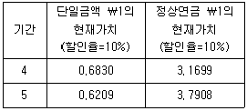
- ￦198,280
- ￦200,000
- ￦208,437
- ￦229,282
- ￦250,000
(정답률: 알수없음)
60. 다음은 (주)감평의 수익 관련 자료이다.
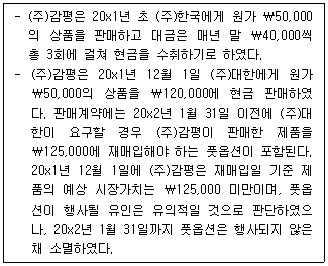
(주)감평이 20x2년에 인식해야 할 총수익은? (단, 20x1년 초 (주)한국의 신용특성을 반영한 이자율은 5%이고, 계산금액은 소수점 첫째자리에서 반올림하며, 단수차이로 인한 오차가 있으면 가장 근사치를 선택한다.)
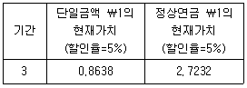
- ￦0
- ￦120,000
- ￦125,000
- ￦128,719
- ￦130,718
(정답률: 알수없음)
61. (주)감평의 20x1년도 현금흐름표상 영업에서 창출된 현금(영업으로부터 창출된 현금)은 ￦100,000이다. 다음 자료를 이용하여 계산한 (주)감평의 20x1년 법인세 비용차감전순이익 및 영업활동순현금흐름은? (단, 이자지급 및 법인세 납부는 영업활동으로 분류한다.)
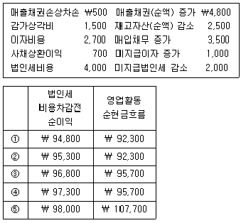
- ①
- ②
- ③
- ④
- ⑤
(정답률: 알수없음)
62. 다음은 20x1년 초 설립한 (주)감평의 법인세 관련 자료이다.
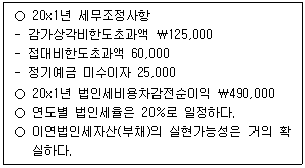
20x1년 법인세비용은?
- ￦85,000
- ￦98,000
- ￦1⑤,000
- ￦110,000
- ￦122,000
(정답률: 알수없음)
63. 20x1년 1월 1일 설립한 (주)감평의 20x1년 보통주(주당 액면금액 ￦5,000) 변동현황은 다음과 같다.
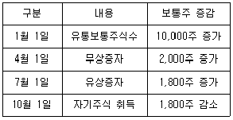
20x1년 7월 1일 주당 ￦5,000에 유상증자가 이루어졌으며, 유상증자 직전 주당공정가치는 ￦18,000이다. 20x1년 기본주당순이익이 ￦900일 때, 당기순이익은? (단, 우선주는 없고, 가중평균유통보통주식수는 월할계산한다.)
- ￦10,755,000
- ￦10,800,000
- ￦11,2⑤,000
- ￦11,766,600
- ￦12,273,750
(정답률: 알수없음)
64. (주)감평은 (주)한국과 다음과 같은 기계장치를 상호 교환하였다.
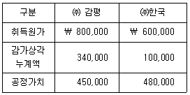
교환과정에서 (주)감평은 (주)한국에게 현금을 지급하고, 기계장치 취득원가 ￦470,000, 처분손실 ￦10,000을 인식하였다. 교환과정에서 (주)감평이 지급한 현금은? (단, 교환거래에 상업적 실질이 있고 각 기계장치의 공정가치는 신뢰성 있게 측정된다.)
- ￦10,000
- ￦20,000
- ￦30,000
- ￦40,000
- ￦50,000
(정답률: 알수없음)
65. 다음은 (주)감평이 20x1년 1월 1일 액면발행한 전환사채와 관련된 자료이다.
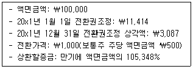
20x2년 1월 1일 전환사채 액면금액의 60%에 해당하는 전환사채가 보통주로 전환될 때, 증가하는 주식발행초과금은? (단, 전환사채 발행시점에서 인식한 자본요소(전환권대가) 중 전환된 부분은 주식발행초과금으로 대체하며, 계산금액은 소수점 첫째자리에서 반올림하며, 단수차이로 인한 오차가 있으면 가장 근사치를 선택한다.)
- ￦25,853
- ￦28,213
- ￦28,644
- ￦31,853
- ￦36,849
(정답률: 알수없음)
66. 다음은 20x1년 설립된 (주)감평의 재고자산(상품) 관련 자료이다.
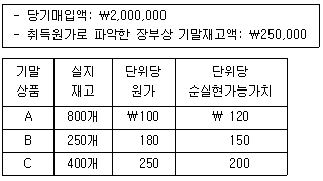
(주)감평의 20x1년 재고자산감모손실은? (단, 재고자산평가손실과 재고자산감모손실은 매출원가에 포함한다.)
- ￦0
- ￦9,000
- ￦25,000
- ￦27,500
- ￦52,500
(정답률: 알수없음)
67. (주)감평은 20x1년 1월 1일 기계장치(내용연수 5년, 잔존가치 ￦0, 정액법 상각)를 ￦1,000,000에 취득하여 사용개시 하였다. (주)감평은 동 기계장치에 재평가모형을 적용하며 20x2년 말 손상차손 ￦12,500을 인식하였다. 다음은 기계장치에 대한 재평가 및 손상 관련 자료이다.
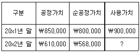
20x2년 말 기계장치의 사용가치는?(문제 오류로 가답안 발표시 4번으로 발표되었지만 확정답안 발표시 모두 정답처리 되었습니다. 여기서는 가답안인 4번을 누르면 정답 처리 됩니다.)
- ￦522,500
- ￦550,000
- ￦568,000
- ￦575,000
- ￦597,500
(정답률: 알수없음)
68. 상품매매기업인 (주)감평은 20x1년 초 건물(취득원가 ￦10,000,000, 내용연수 10년, 잔존가치 ￦0, 정액법 상각)을 취득하면서 다음과 같은 조건의 공채를 액면금액으로 부수 취득하였다.
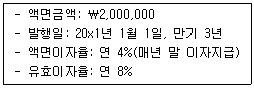
(주)감평이 동 채권을 상각후원가 측정(AC) 금융자산으로 분류할 경우, 건물과 상각후원가 측정(AC) 금융자산 관련 거래가 20x1년 당기순이익에 미치는 영향은? (단, 건물에 대해 원가모형을 적용하고, 계산금액은 소수점 첫째자리에서 반올림하며, 단수차이로 인한 오차가 있으면 가장 근사치를 선택한다.)
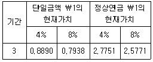
- ￦143,501 증가
- ￦856,499 감소
- ￦877,122 감소
- ￦920,000 감소
- ￦940,623 감소
(정답률: 알수없음)
69. 상품매매기업인 (주)감평은 20x0년 말 취득한 건물(취득원가 ￦2,400,000, 내용연수 10년, 잔존가치 ￦0, 정액법 상각)을 유형자산으로 분류하여 즉시 사용개시 하고, 동 건물에 대해 재평가모형을 적용하기로 하였다. 20x1년 10월 1일 (주)감평은 동 건물을 투자부동산으로 계정 대체하고 공정가치모형을 적용하기로 하였다. 시점별 건물의 공정가치는 다음과 같다.
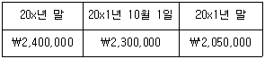
동 건물 관련 회계처리가 20x1년 당기순이익과 기타포괄이익에 미치는 영향은 각각 얼마인가? (단, 재평가잉여금은 이익잉여금으로 대체하지 않으며, 감가상각은 월할계산한다.)
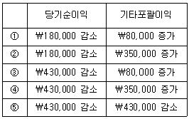
- ①
- ②
- ③
- ④
- ⑤
(정답률: 알수없음)
70. 20x1년 1월 1일 (주)감평은 (주)한국이 동 일자에 발행한 사채(액면금액 ￦1,000,000, 액면이자율 연 4%, 이자는 매년 말 지급)를 ￦896,884에 취득하였다. 취득 당시 유효이자율은 연 8%이다. 20x1년 말 동 사채의 이자수취 후 공정가치는 ￦925,000이며, 20x2년 초 ￦940,000에 처분하였다. (주)감평의 동 사채관련 회계처리에 관한 설명으로 옳지 않은 것은? (단, 계산금액은 소수점 첫째자리에서 반올림하며, 단수차이로 인한 오차가 있으면 가장 근사치를 선택한다.)
- 당기손익-공정가치(FVPL) 측정 금융자산으로 분류하였을 경우, 20x1년 당기순이익은 ￦68,116 증가한다.
- 상각후원가(AC) 측정 금융자산으로 분류하였을 경우, 20x1년 당기순이익은 ￦71,751 증가한다.
- 기타포괄손익-공정가치(FVOCI) 측정 금융자산으로 분류하였을 경우, 20x1년 당기순이익은 ￦71,751 증가한다.
- 상각후원가(AC) 측정 금융자산으로 분류하였을 경우, 20x2년 당기순이익은 ￦11,365 증가한다.
- 기타포괄손익-공정가치(FVOCI) 측정 금융자산으로 분류하였을 경우, 20x2년 당기순이익은 ￦15,000 증가한다.
(정답률: 알수없음)
71. (주)감평의 20x1년 기초 및 기말 재고자산은 다음과 같다.
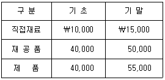
(주)감평은 20x1년 중 직접재료 ￦35,000을 매입하였고, 직접노무원가 ￦45,000을 지급하였으며, 제조간접원가 ￦40,000이 발생하였다. (주)감평의 20x1년 당기제품제조원가는? (단, 20x1년 초 직접노무원가 선급금액은 ￦15,000이고 20x1년 말 직접노무원가 미지급금액은 ￦20,000이다.)
- ￦110,000
- ￦120,000
- ￦125,000
- ￦140,000
- ￦150,000
(정답률: 알수없음)
72. (주)감평은 두 개의 제조부문(P1, P2)과 두 개의 보조부문(S1, S2)을 두고 있다. 각 부문간의 용역수수관계는 다음과 같다.
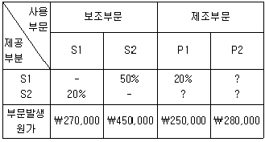
(주)감평은 보조부문의 원가를 상호배분법으로 배분하고 있다. 보조부문의 원가를 배분한 후의 제조부문 P1의 총원가가 ￦590,000이라면, 보조부문 S2가 제조부문 P1에 제공한 용역제공비율은?
- 20%
- 25%
- 30%
- 35%
- 40%
(정답률: 알수없음)
73. (주)감평은 단일공정을 통해 단일제품을 생산하고 있으며, 선입선출법에 의한 종합원가계산을 적용하고 있다. 직접재료는 공정 초에 전량 투입되고, 가공원가는 공정 전반에 걸쳐 균등하게 발생한다. (주)감평의 20x1년 기초재공품은 10,000단위(가공원가 완성도 40%), 당기착수량은 30,000단위, 기말재공품은 8,000단위(가공원가 완성도 50%)이다. 기초재공품의 직접재료원가는 ￦170,000이고, 가공원가는 ￦72,000이며, 당기투입된 직접재료원가와 가공원가는 각각 ￦450,000과 ￦576,000이다. 다음 설명 중 옳은 것은? (단, 공손 및 감손은 발생하지 않는다.)
- 기말재공품원가는 ￦192,000이다.
- 가공원가의 완성품환산량은 28,000단위이다.
- 완성품원가는 ￦834,000이다.
- 직접재료원가의 완성품환산량은 22,000단위이다.
- 직접재료원가와 가공원가에 대한 완성품환산량 단위당원가는 각각 ￦20.7과 ￦20.3이다.
(정답률: 알수없음)
74. (주)감평은 동일한 원재료를 결합공정에 투입하여 세 종류의 결합제품 A, B, C를 생산ㆍ판매하고 있다. 결합제품 A, B, C는 분리점에서 판매될 수 있으며, 추가가공을 거친 후 판매될 수도 있다. (주)감평의 20x1년 결합제품에 관한 자료는 다음과 같다.
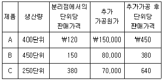
결합제품 A, B, C의 추가가공 여부에 관한 설명으로 옳은 것을 모두 고른 것은? (단, 기초 및 기말 재고자산은 없으며, 생산된 제품은 모두 판매된다.)
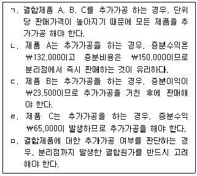
- ㄱ, ㄴ
- ㄴ, ㄷ
- ㄱ, ㄴ, ㄷ
- ㄴ, ㄷ, ㄹ
- ㄷ, ㄹ, ㅁ
(정답률: 알수없음)
75. (주)감평은 표준원가계산제도를 채택하고 있다. 20x1년 직접노무원가와 관련된 자료가 다음과 같을 경우, 20x1년 실제 직접노무시간은?
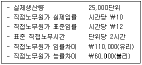
- 42,500시간
- 45,000시간
- 50,000시간
- 52,500시간
- 55,000시간
(정답률: 알수없음)
76. (주)감평의 전부원가계산에 의한 영업이익은 ￦374,000이고, 변동원가계산에 의한 영업이익은 ￦352,000이며, 전부원가계산에 의한 기말제품재고액은 ￦78,000이다. 전부원가계산에 의한 기초제품재고액이 변동원가계산에 의한 기초제품재고액보다 ￦20,000이 많은 경우, 변동원가계산에 의한 기말제품재고액은? (단, 기초 및 기말 재공품은 없으며, 물량 및 원가흐름은 선입선출법을 가정한다.)
- ￦36,000
- ￦42,000
- ￦56,000
- ￦58,000
- ￦100,000
(정답률: 알수없음)
77. (주)감평은 단일 제품 A를 생산ㆍ판매하고 있다. 제품 A의 단위당 판매가격은 ￦2,000, 단위당 변동비는 ￦1,400, 총고정비는 ￦90,000이다. (주)감평이 세후목표이익 ￦42,000을 달성하기 위한 매출액과, 이 경우의 안전한계는? (단, 법인세율은 30%이다.)
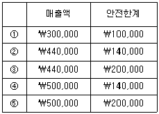
- ①
- ②
- ③
- ④
- ⑤
(정답률: 알수없음)
78. (주)감평의 20x1년 4월 초 현금잔액은 ￦450,000이며, 3월과 4월의 매입과 매출은 다음과 같다.
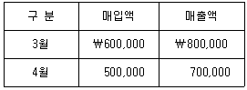
매출은 모두 외상으로 이루어지며, 매출채권은 판매한 달에 80%, 그 다음 달에 20%가 현금으로 회수된다. 모든 매입 역시 외상으로 이루어지고, 매입채무는 매입액의 60%를 구입한 달에, 나머지 40%는 그 다음 달에 현금으로 지급한다. (주)감평은 모든 비용을 발생하는 즉시 현금으로 지급하고 있으며, 4월 중에 급여 ￦20,000, 임차료 ￦10,000, 감가상각비 ￦15,000이 발생하였다. (주)감평의 4월말 현금잔액은?
- ￦540,000
- ￦585,000
- ￦600,000
- ￦630,000
- ￦720,000
(정답률: 알수없음)
79. (주)감평은 최근 신제품을 개발하여 최초 10단위의 제품을 생산하는데 총 150시간의 노무시간을 소요하였으며, 직접노무시간당 ￦1,200의 직접노무원가가 발생하였다. (주)감평은 해당 신제품 생산의 경우, 90%의 누적평균시간 학습곡선모형이 적용될 것으로 예상하고 있다. 최초 10단위 생산 후, 추가로 30단위를 생산하는데 발생할 것으로 예상되는 직접노무원가는?
- ￦180,000
- ￦259,200
- ￦324,000
- ￦403,200
- ￦583,200
(정답률: 알수없음)
80. 레저용 요트를 전문적으로 생산ㆍ판매하고 있는 (주)감평은 매년 해당 요트의 주요 부품인 자동제어센서 2,000단위를 자가제조하고 있으며, 관련 원가자료는 다음과 같다.
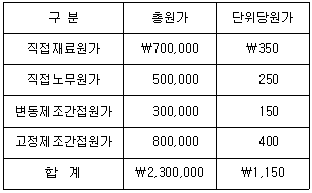
(주)감평은 최근 외부업체로부터 자동제어센서 2,000단위 전량을 단위당 ￦900에 공급하겠다는 제안을 받았다. (주)감평이 동 제안을 수락할 경우, 기존설비를 임대하여 연간 ￦200,000의 수익을 창출할 수 있으며, 고정제조간접원가의 20%를 회피할 수 있다. (주)감평이 외부업체로부터 해당 부품을 공급받을 경우, 연간 영업이익에 미치는 영향은?
- ￦0
- ￦60,000 감소
- ￦60,000 증가
- ￦140,000 감소
- ￦140,000 증가
(정답률: 알수없음)